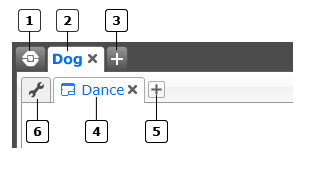
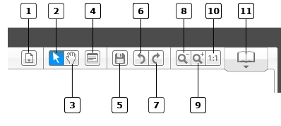
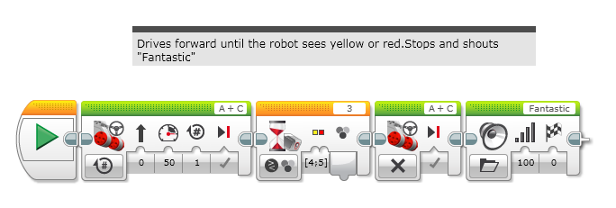

					<table cellpadding="0" cellspacing="0" border="0"><tbody><tr><td>
	
						<h1>入门<a name="top"></a></h1>
		<div id="block_1113" class="block blockHeader">
				<div class="description">EV3 软件在“大厅”中打开。要进入编程环境，请单击“打开项目”以打开现有项目。可以单击“新建项目”以创建新项目。</div>
			</div>
	<div id="block_1114" class="block blockChaptor">
		<div class="title"><a name="FileOrganization" style="position:relative; top:-10px;"></a>文件组织</div>
		<div class="description"></div>
	</div>
	<div id="block_1117" class="block blockTable bullets">
		<table class="blockTable">
		
<tbody><tr><td></td><td>大厅 </td></tr><tr><td></td><td>项目选项卡 </td></tr><tr><td></td><td>添加项目 </td></tr><tr><td></td><td>程序选项卡 </td></tr><tr><td></td><td>添加程序 </td></tr><tr><td></td><td><a href="./index.html?id=ProjectPropertiesPage">项目属性</a> </td></tr>		</tbody></table>
	</div>
	<div id="block_1116" class="block blockStep">
		<div class="title"></div>
		<div class="description">文件组织为各个项目。<br>
  <br>
例如，可以构建一个“狗”机器人。会创建一个“狗”项目，在该项目中有许多专用于该机器人的程序、图像和声音文件。如果随后构建一个颜色分类器，则会创建一个“颜色分类器”项目，其中包含与该机器人相关的所有程序、图像和声音文件。</div>
	</div>
	<div id="block_1115" class="block blockChaptor">
		<div class="title"><a name="ProgrammingCanvasToolbar" style="position:relative; top:-10px;"></a>编程画布工具栏</div>
		<div class="description"></div>
	</div>
	<div id="block_1118" class="block blockTable bullets">
		<table class="blockTable">
		
<tbody><tr><td></td><td>程序列表： “程序列表”下拉列表在单击此工具时出现。这会列出项目中当前打开的所有程序。</td></tr><tr><td></td><td>选择： 需要处于此模式中才能编辑程序。单击“选择”，然后使用鼠标选择单个编程模块进行编辑。或者，拖动一个框围绕几个编程模块以选择它们。</td></tr><tr><td></td><td>平移 </td></tr><tr><td></td><td><a href="./index.html?id=ProgrammingEnvironment#ProgrammingCanvasComment">注释</a> </td></tr><tr><td></td><td>保存项目： 保存项目也会保存与项目关联的所有程序。</td></tr><tr><td></td><td>撤销： 撤销编程画布上的最后一个操作。</td></tr><tr><td></td><td>重做 </td></tr><tr><td></td><td>缩小 </td></tr><tr><td></td><td>放大 </td></tr><tr><td></td><td>重置缩放 </td></tr><tr><td></td><td>打开<a href="./index.html?id=ContentEditor">内容编辑器</a> </td></tr>		</tbody></table>
	</div>
	<div id="block_1119" class="block blockChaptor">
		<div class="title"><a name="ProgrammingCanvasComment" style="position:relative; top:-10px;"></a>注释</div>
		<div class="description">注释可用于在编程画布上进行有关程序的备注。在放置注释之后，拖动“注释”框并调整其大小，然后编写注释。<br>
<br>
</div>
	</div>
	<div id="block_1120" class="block blockTip">
		<div class="title">提示和技巧</div>
		<div class="boxContent">
			<div class="description">注释是写下所进行的工作的好方法。可将它们视为对自己的小提醒。</div>
				</div>
	</div>
	
			<div id="quick">
				<div class="header"><a href="./index.html?id=ProgrammingEnvironment#header">入门</a></div>
					<div class="quickText">快速链接</div>
					
					<ul>
	<li><a href="./index.html?id=ProgrammingEnvironment#FileOrganization">文件组织</a></li><li><a href="./index.html?id=ProgrammingEnvironment#ProgrammingCanvasToolbar">编程画布工具栏</a></li><li><a href="./index.html?id=ProgrammingEnvironment#ProgrammingCanvasComment">注释</a></li>					</ul>
			</div>
	
	</td></tr></tbody></table>